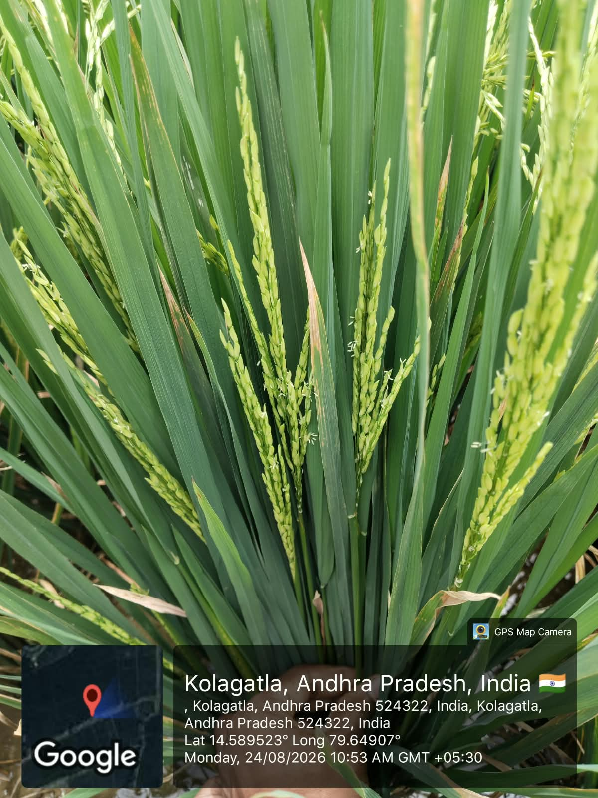
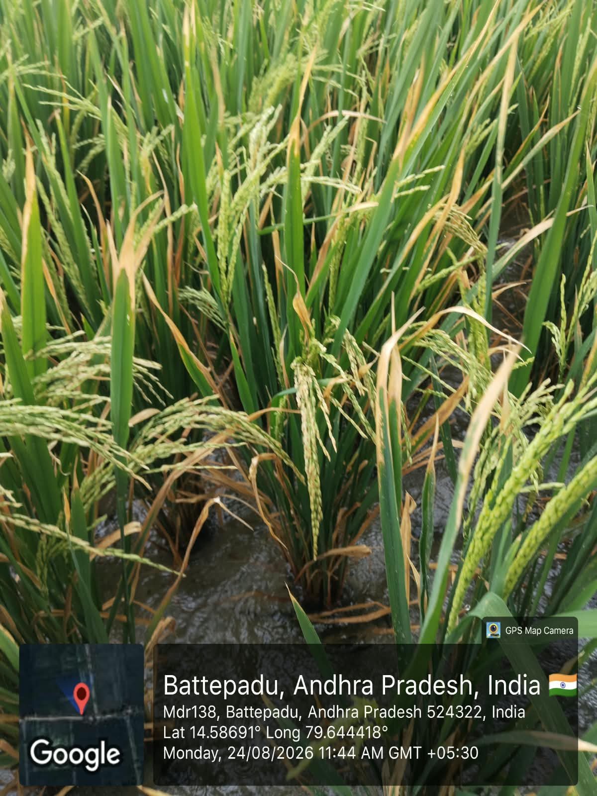
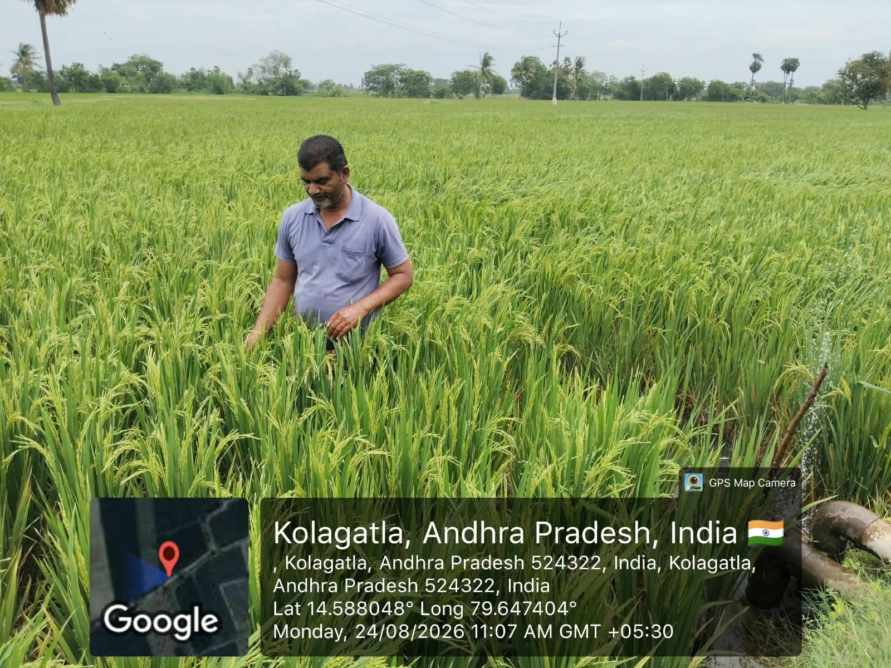
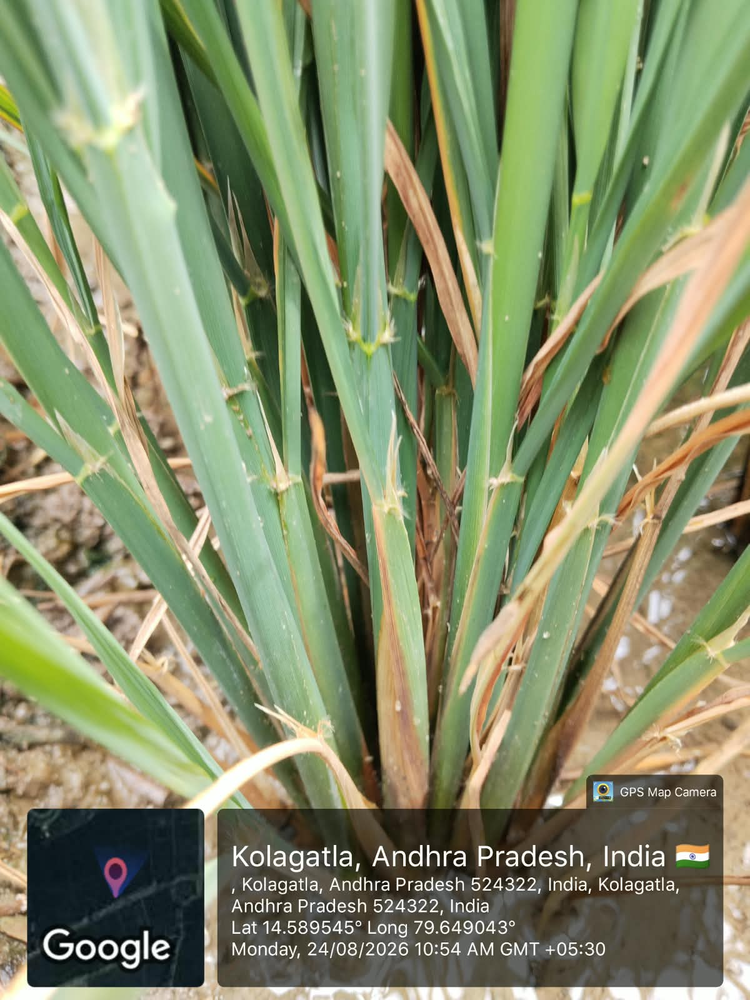

Community Service Project
Week 3 Report
Observing paddy growth, panicle development and crop health in the field.
| Day | Activity | Observations / Notes |
|---|---|---|
| Day 1 | Observed paddy panicles and leaves. | Examined the crop at close range and noted the stage of panicle development. |
| Day 2 | Compared crop growth in different field areas. | Observed variation in plant colour, leaf condition and grain formation across the paddy field. |
| Day 3 | Inspected mature paddy plants with a farmer. | Learned how farmers check grain filling, plant strength and overall crop health. |
| Day 4 | Observed signs of crop stress. | Studied damaged leaves and drying portions so that field problems can be identified early. |
| Day 5 | Recorded crop observations. | Understood that regular monitoring of panicles, leaves and water conditions supports timely organic crop care. |
Image Gallery



